Game
Click any thumbnail will show a larger version of the artwork!
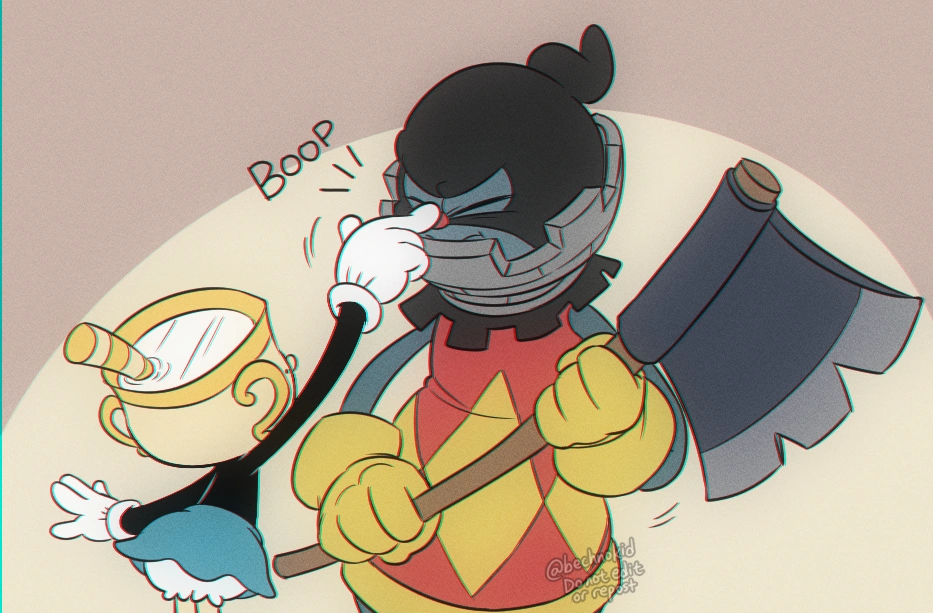Description: Boop!
Characters: Ms. Chalice, Rook - Cuphead DLC
">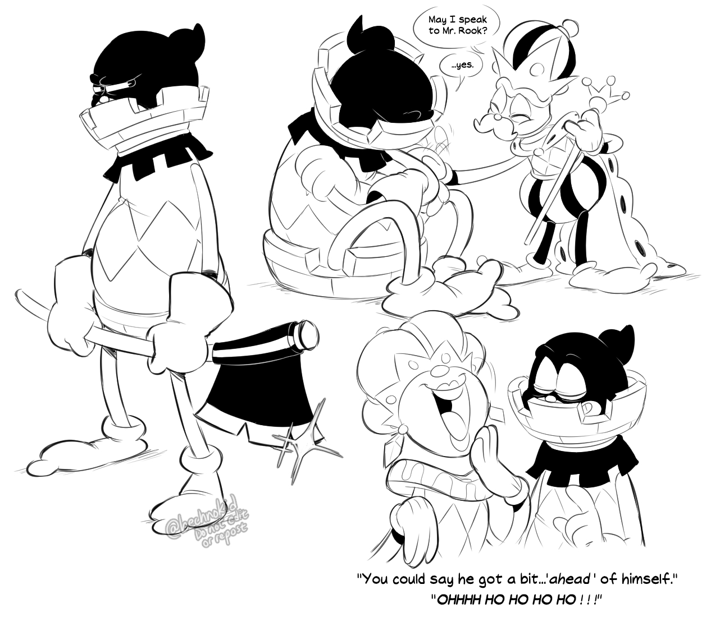Description: He's the champion of my heart ♥ (Right-click and open in new tab!)
Characters: Rook, King, Queen - Cuphead DLC
">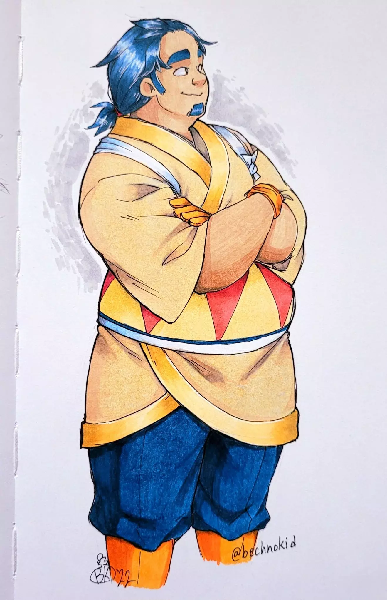Description: It's been almost a year since i did anything with markers! couple of mistakes here and there, but i am happy! :3
Character: King Dedede (gijinka) - Kirby
">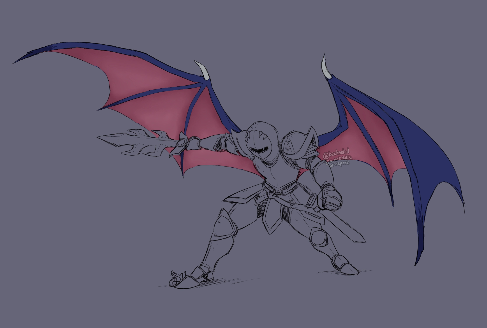Description: Showing off Meta Knight's wings before I go to bed! I know everyone likes to compare his wings to those of a bat's, but consider this: wyvern wings. (Right-click and open in new tab!)
Character: Meta Knight (gijinka) - Kirby
">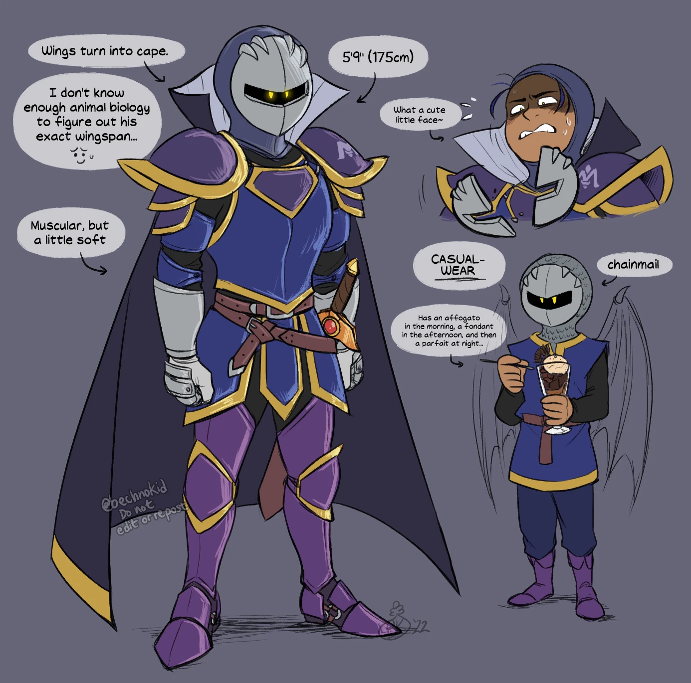Description: Attempt #86 in a Meta Knight gijinka design...I'm pretty happy with this one! (Right-click and open in new tab!)
Character: Meta Knight (gijinka) - Kirby
">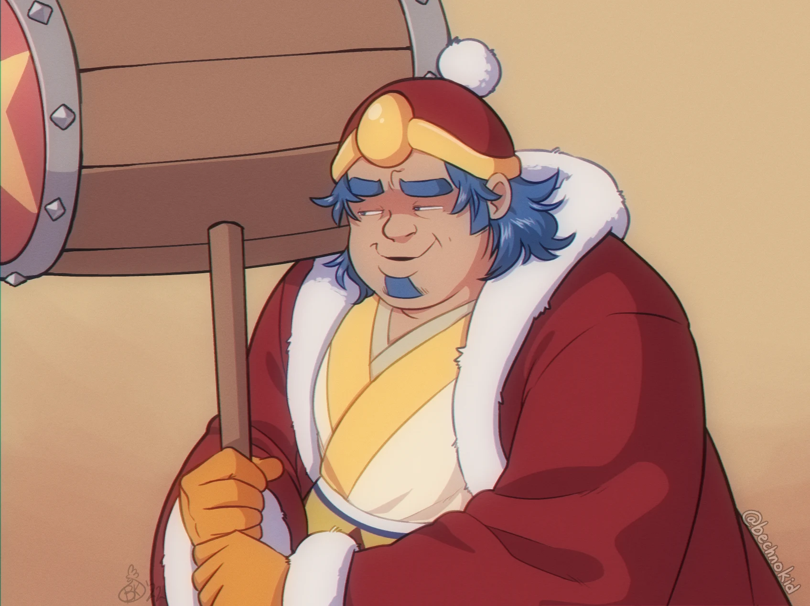Description: If you know the meme, you know the meme!
Character: King Dedede (gijinka) - Kirby
">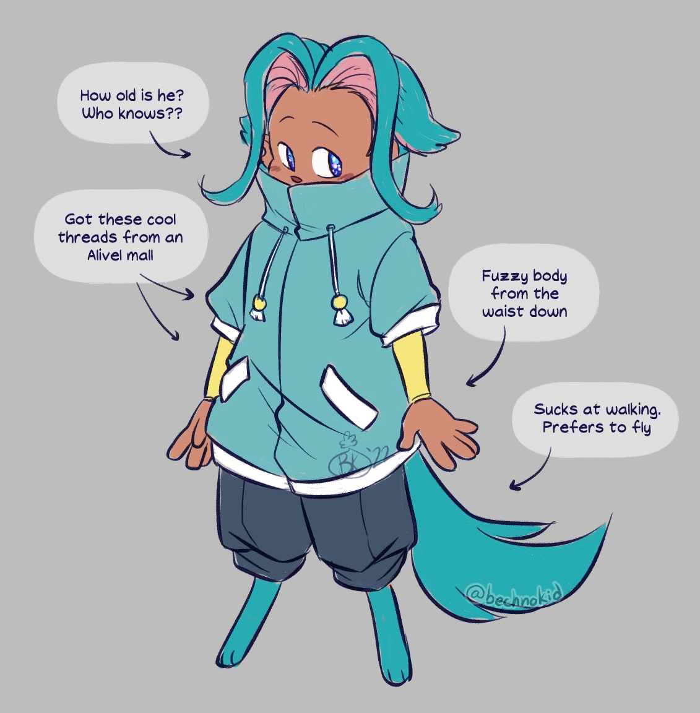Description: My favorite character from Forgotten Land is... -smudged handwriting on hand-
"Elfo"!
Character: Elfilin (gijinka) - Kirby
">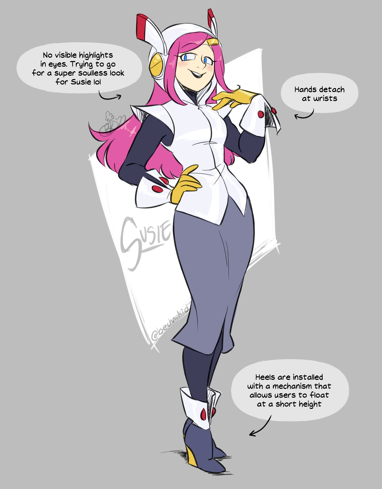Description: I don't trust her! Not one bit!!
Character: Susie Hartmann (gijinka) - Kirby
">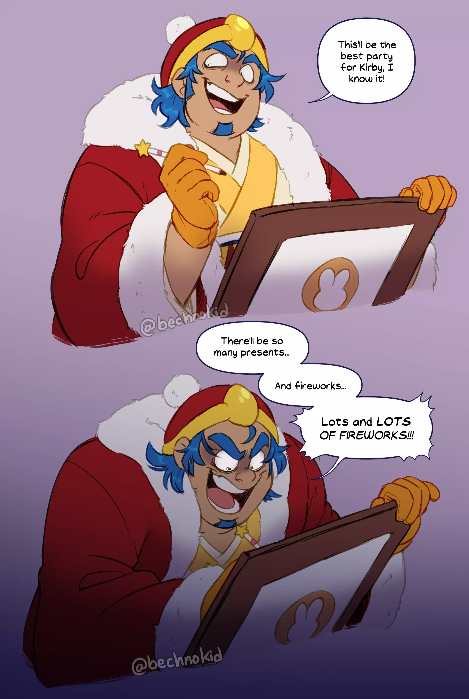Description: I still wholeheartedly believe that Dedede has become a father figure to Kirby (and the Waddle Dees), but I love making maniacal expressions for the self-made king of Dreamland!
Charcter: King Dedede (gijinka) - Kirby
">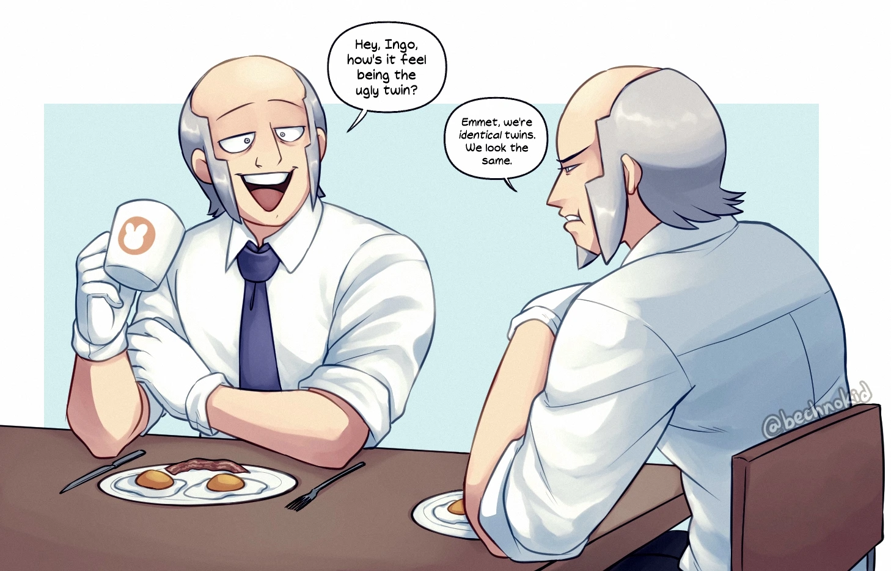Description: This is honestly the best news I've ever heard for the twins lol (Right-click and open in new tab!)
Characters: Emmet (left), Ingo (right) - Pokémon: Black and White
">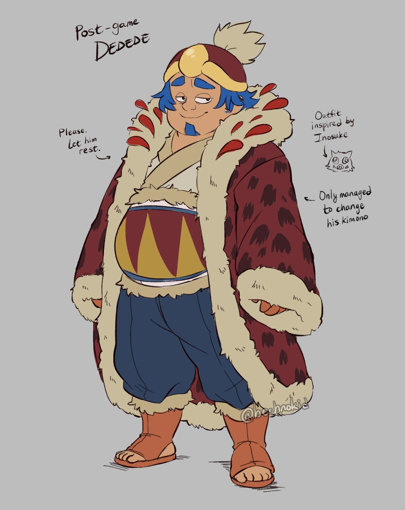Description: A sleep-dededeprived king. but hey, at least he got a cool outfit!
Character: King Dedede (gijinka) - Kirby
">